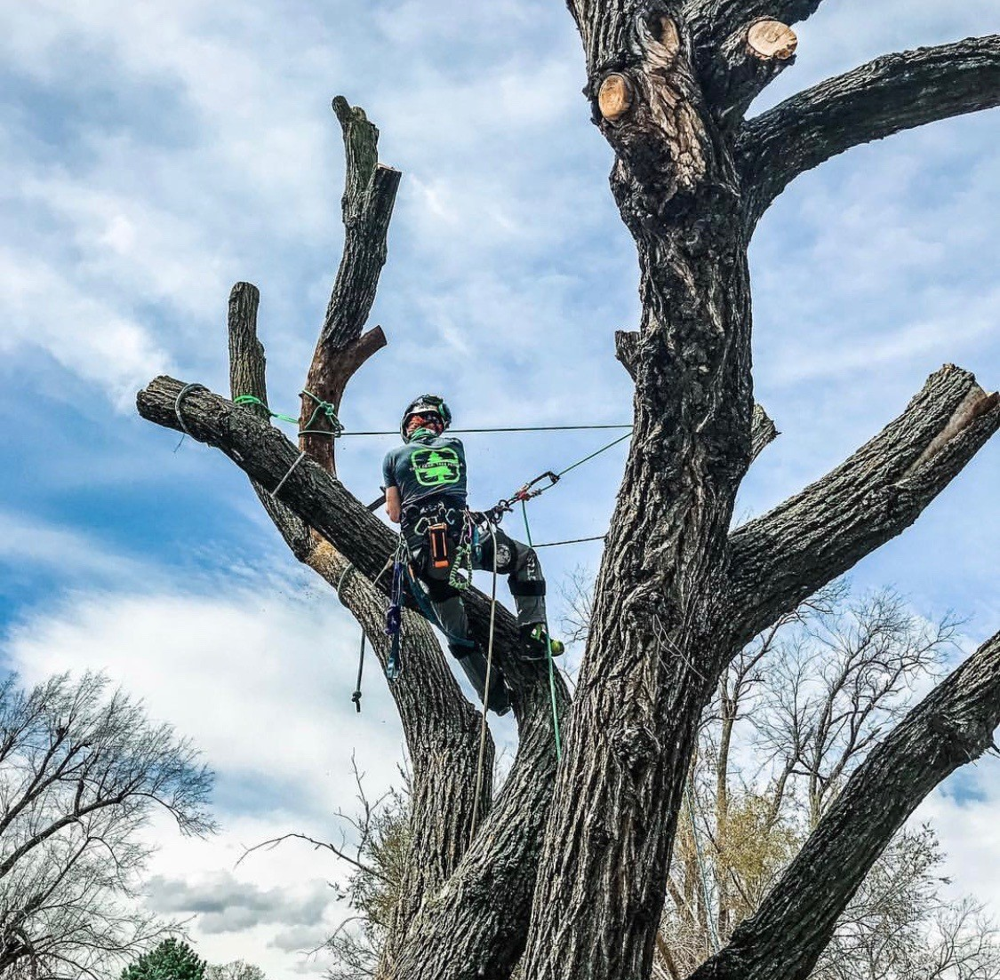

This site exists to make finding a good tree surgeon in Brighouse simple - and it costs you nothing.
Brighouse Tree Surgeons is an independent enquiry service run by The Shemesh Studio. When you send an enquiry, we pass it to a qualified, insured tree surgeon who works in your area. They contact you, visit for free, and give you a written quote. You deal with them directly from that point - you never owe us anything.

Done well, it keeps your trees healthy and your property safe for decades. Done badly, it can kill trees, damage roofs and put people at risk. Taking two minutes to get a proper quote is the easy part.